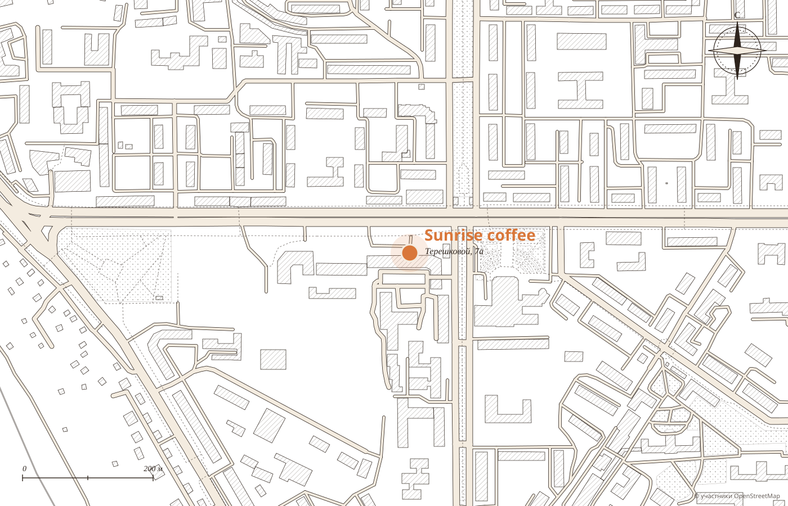

01
Вид из окна«Понравилось меню, атмосфера, вид из окна. То, что первая линия».
Демо-макет студии MERIDIAN · не является официальным сайтом заведения
Кофейня · Улан‑Удэ · Терешковой, 7а
Еда, кофе, уют. Лучшая кофейня Улан-Удэ 2026, 2025 и 2023 по версии 2ГИС.
Сегодня солнце над Улан-Удэ встаёт в 7:33, а мы открываемся в 8:30.
будни с 8:30, выходные с 9:00, до 20:00
Три премии 2ГИС · 4.9, 703 оценки
Утро по солнцу
Зимой рассвет в Улан-Удэ около девяти, а кофе здесь с половины девятого. Время рассвета ниже считается на сегодня, подсвечена строка, которая сейчас.
Завтраки


«Обожаю английский завтрак», пишет гостья. Цены подставляются из вашего меню.

Отдельный восторг
Эспрессо поверх тёмно-красного гранатового сока. «Отдельный восторг», пишет гостья, которая была здесь восемь раз.


Десерты
Так пишет гостья, которая приходила семь раз. Яблочный штрудель с пломбиром, черничный творожный, панкейки с бананом.
Что любят гости
Из отзывов гостей в 2ГИС. Наведите на слово или нажмите на него: покажем, как это выглядит.
Маленькие ритуалы
01
Вид из окна«Понравилось меню, атмосфера, вид из окна. То, что первая линия».
02
Летняя верандаИ столики на улице, пока в Улан-Удэ тепло.
03
С собой на работу«Работаю рядом и иногда беру еду с собой. Всегда сочно».
04
Подскажут и поправят«Готовы подсказать по меню, что-то скорректировать».

Адрес и часы
Первая линия, первый этаж. Вход с парковки на общую террасу, пандус сбоку.
Для владельца
Часы, статус «открыто» и время рассвета по Улан-Удэ на сегодня.
Кнопка звонка или заказа для тех, кто работает рядом.
Английский завтрак, драники и бамбл видно ещё до прихода.
Никаких персональных данных: политика конфиденциальности не нужна.